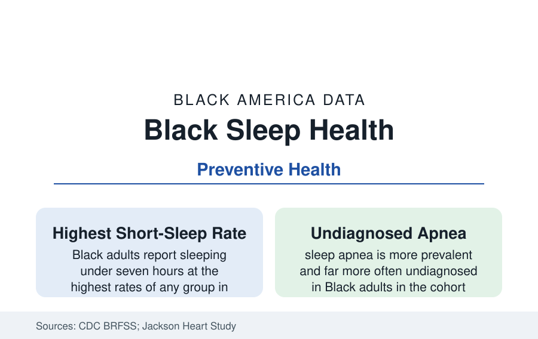

Black Public Health
Sleep Health in Black America: The Shortest Nights in the Data
Black adults sleep less and worse than any other group in the federal sleep data — a disparity that feeds the chronic disease files. The CDC and research data.

Black adults sleep less than any other Americans — and sleep worse. The CDC's surveillance places Black adults' short-sleep rates (under seven hours) at the top of the distribution, approaching half the population in several survey editions; the objective measurement studies find the gaps larger than the self-reports; and sleep apnea — the era's most consequential sleep disorder — is more prevalent, more severe, and far more often undiagnosed in Black patients. Sleep is the health behavior the chronic disease files quietly run on. This article reports the sleep data.
Duration and Quality: What the Studies Measure
The measurement literature separates the self-report from the wrist: actigraphy studies (the CARDIA and MESA cohorts' sleep sub-studies) record Black adults sleeping thirty to sixty minutes less per night on average than White adults, with lower sleep efficiency (more of the night spent awake after first sleep) and less slow-wave deep sleep in the polysomnography data — differences present from young adulthood and widening with age. The Jackson Heart Study's sleep ancillary data give the file its dedicated cohort: the largest study of Black cardiovascular health measuring sleep against the outcomes this section tracks. The shift-work variable binds the employment data to the outcome: the service, health care, and logistics workforces of the employment profiles work the night and rotating shifts at the highest rates, and the shift-work sleep disorder and circadian literature prices their exposure in the same cardiometabolic currency.
Apnea: The Undiagnosed Epidemic Within
Obstructive sleep apnea's Black data form a file within the file: prevalence in the cohort studies runs two to three times higher in Black adults (with childhood apnea similarly elevated — the tonsil-and-adenoid surgery data's pediatric echo), severity at diagnosis is greater, and the diagnosis rate itself is the scandal — the studies estimating the large majority of Black apnea cases undiagnosed, against a White undiagnosed share that is merely large. The consequences cascade through the section: apnea drives resistant hypertension (the hypertension profile's hardest cases disproportionately apneic), atrial fibrillation and stroke, the diabetes file's insulin resistance, and the cognitive aging data. The treatment chain then stratifies: CPAP prescription follows diagnosis, adherence support (mask fitting, follow-up — the DME supplier system's service data) follows class lines, and the surgical and oral-appliance alternatives follow insurance. The screening instruments themselves carry a measurement note: the standard questionnaires were validated on other populations, and the oximetry-first pathways of the current guidelines are the field's correction in progress.
The Environment of Sleep
The sleep literature's social variables read like this reference's table of contents: noise and light exposure by neighborhood (the environmental studies' decibel maps overlaying the district maps), housing crowding and temperature (the housing file's bedrooms), safety and vigilance (the stress physiology of the mental-health profile — the discrimination-and-sleep studies finding vigilance measures mediating the duration gap), caregiving's night work (the grandparents and care profiles' interrupted sleep), and the second-job and long-commute arithmetic of the transportation file — sleep is where the day's inequalities are tallied, nightly. The historical echo is in the literature for scale: sleep deprivation was measured as an instrument of control in the slavery-era records, and the modern researchers who cite it frame the current gap as its distant descendant in the data.
Consequences and the Intervention Ledger
The outcome models assign sleep its share of the section's master files: short sleep is independently associated, in the meta-analyses, with hypertension, diabetes, obesity, cardiovascular events, cognitive decline, and all-cause mortality at magnitudes that make the racial sleep gap a measurable contributor to the racial health gap — the mediation analyses estimating sleep's share of the cardiometabolic disparities in the range of several percentage points of the total, a single behavior among the largest single mediators identified. The interventions with data behind them: CBT-I (cognitive behavioral therapy for insomnia — the gold standard, its provider supply thin and its digital forms scaling), apnea screening in the high-risk clinics, shift-scheduling reforms in the union contracts of the health care workforce itself, and the bedroom-environment programs of the housing-health interventions. The cultural layer — 'sleep hygiene' advice colliding with the hustle economy's valorization of sleeplessness, a trope the Black health media now contest explicitly — is the file's public argument.
Reading the Sleep Data
Every night, the data say, Black America recovers less than the country it works for — shorter, lighter, more interrupted sleep, its deepest disorder undiagnosed — and pays the difference into the hypertension, diabetes, and dementia ledgers by day. Sleep is the most democratic health behavior ever measured and the least equally distributed; its table may be the health section's most honest single page.
More in Black Public Health
Hypertension Among Black Adults: Prevalence, Control, and Consequences
About 55 percent of Black adults have hypertension — the highest rate of any U.S. group. Prevalence, onset, control, and the stroke, heart, and kidney consequences in the data.
Diabetes Among Black Adults: Prevalence and Complications
Nearly one in five Black adults has diabetes, diagnosed or undiagnosed — and its complications fall with particular weight. The CDC data on prevalence, control, and outcomes.
Black Life Expectancy: The Gap at Birth and Its Causes
Black life expectancy at birth is about 73 years, roughly five years below the national figure — the summary measure of every health gap in this section. The CDC data.
Source: Centers for Disease Control and Prevention, Behavioral Risk Factor Surveillance System sleep data; National Health Interview Survey; Sleep Heart Health and Jackson Heart Study sleep research; American Academy of Sleep Medicine.